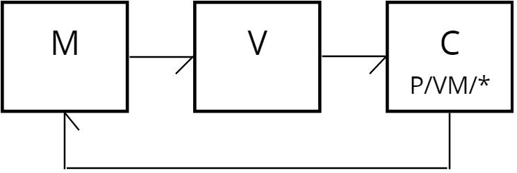
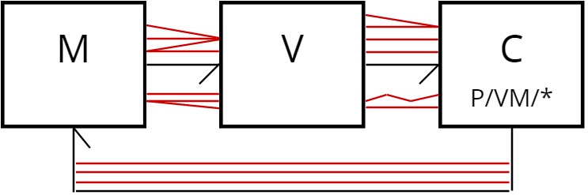

Reactive Programming Cookbook
Focusing on the constituents of our applications' architecture we often neglect relations between them.
In patterns like MVC relations are presented as simple and straightforward, while in reality they might be
complex.
- several parts of a Model represent one entity on a View
- View items a drawn from a single Model value
- it takes several inputs to modify a single value in a Model
- etc.
Expectation

Reality

Reactive approach brings more attention to the relations.
What is this book?
An attempt to explain reactive programming. An attempt to explore reactive programming.
An attempt to find real-world examples of how reactive programming is useful in production code.
Why?
This is not an attempt to make everyone use reactive approach or specifically one of the libraries (frameworks,
languages) right away.
Instead, everyone should be aware of this technique and its advantages, so that NOT USING IT was a deliberate
decision.
Contents
- Introduction
- Underhood
- JS tools
- Comparison
- RxJS
- Bacon.js
- Kefir.js
- Most.js
- Cycle.js
- Other languages
- RxJava
Resources